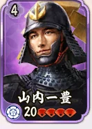
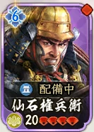
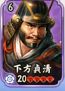
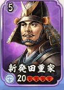
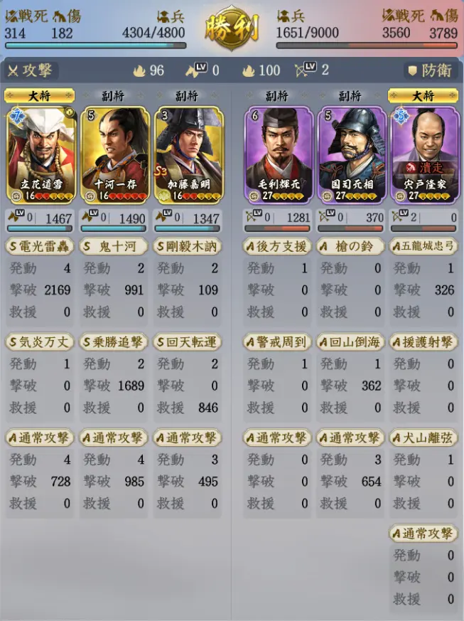
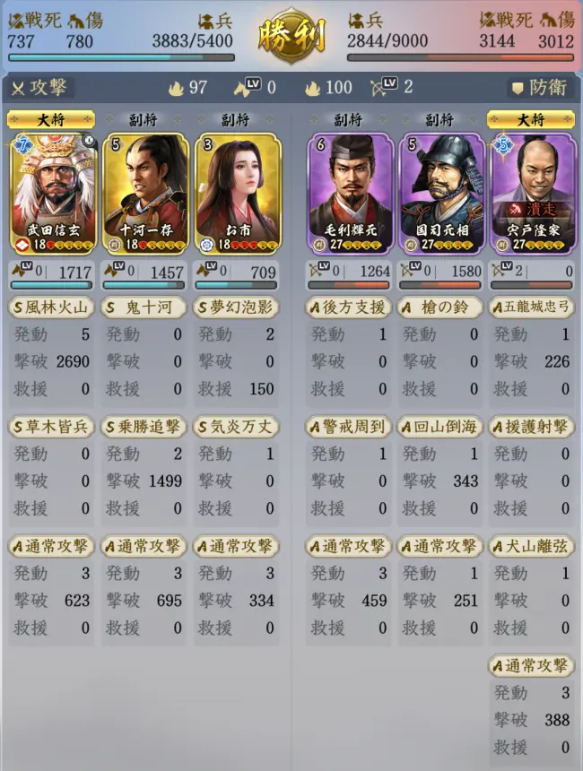
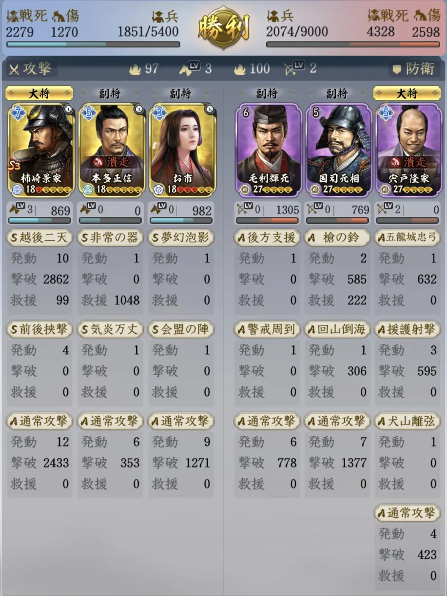
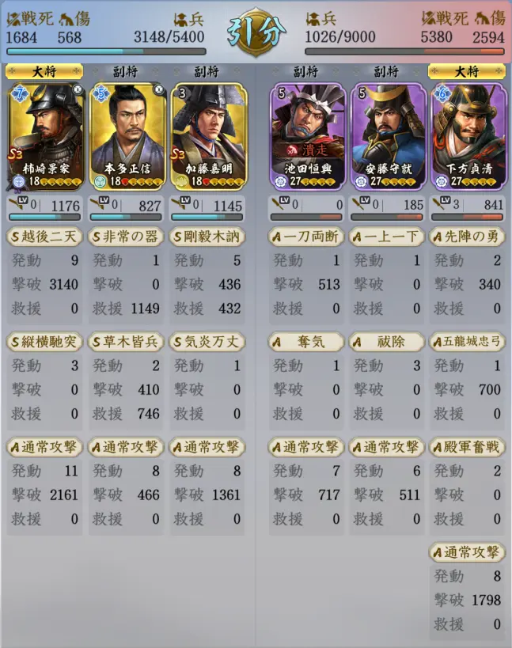

S4 四雄怒涛 / LAND GUIDE
土地5 攻略
敵の顔・兵種・危険要素を確認して、狙う土地を選びます。
守備軍兵力9,000
推奨武将Lv20
推奨部隊兵力6,000
戦法Lv目安10 / 6 / 6
覚醒・第三戦法・装備を準備する。 推奨条件は参考記事の目安です。凸数・戦法・兵種相性によって必要条件は変わります。
守備軍の難易度一覧
参考記事の評価順。兵種Lvは土地Lv・武将Lvとは別の数値です。難易度は絶対的な勝率を示しません。
8 / 8 編成 · 簡単 → 困難
難易度順 01 / 08
宍戸隆家
🟢 簡単
弓 · 兵種Lv2
回復不可無策

難易度順 02 / 08
山内一豊
🟢 簡単寄り
騎 · 兵種Lv2
洞察連撃

難易度順 03 / 08
仙石権兵衛
🟡 普通
足軽 · 兵種Lv2
無策

難易度順 04 / 08
下方貞清
🟡 普通
足軽 · 兵種Lv3
回復不可威圧

難易度順 05 / 08
新発田重家
🟡 普通
鉄砲 · 兵種Lv2
回避混乱無策
難易度順 06 / 08
穴山信君
🟡 普通
騎 · 兵種Lv4
混乱無策
難易度順 07 / 08
大野治房
🟠 やや難
鉄砲 · 兵種Lv4
回避回復不可
難易度順 08 / 08
織田信清
🔴 困難
弓 · 兵種Lv5
混乱無策
該当する編成はありません。条件を変えてください。
実戦戦報｜勝利3例・引分1例
同じ宍戸隆家でも兵損は異なります。低Lvでの勝利は成功例であり、安定攻略の保証ではありません。数値は画面の「兵・戦死・傷」をそのまま記録しています。
宍戸隆家｜勝利

立花道雪・十河一存・加藤嘉明（全員Lv16）
実測：出陣 4,800 → 残兵 4,304
戦死 314 / 負傷 182
画像をタップして拡大宍戸隆家｜勝利

武田信玄・十河一存・お市（全員Lv18）
実測：出陣 5,400 → 残兵 3,883
戦死 737 / 負傷 780
画像をタップして拡大宍戸隆家｜勝利

柿崎景家・本多正信・お市（全員Lv18）
実測：出陣 5,400 → 残兵 1,851
戦死 2,279 / 負傷 1,270
画像をタップして拡大下方貞清｜引分

柿崎景家・本多正信・加藤嘉明（全員Lv18）
実測：出陣 5,400 → 残兵 3,148
戦死 1,684 / 負傷 568
画像をタップして拡大出典・確認範囲
はてなの真戦ブログ：S4「四雄怒涛」序盤攻略まとめ（2026年7月25日）。難易度・兵種・危険要素・推奨条件を参照。確認日：2026年9月27日。
顔画像は既存武将画像・実戦戦報の切り抜き・上記記事の守備軍画像を使用。稲葉重通・穴山信君・織田信清の顔画像は同記事より。記事の利用案内に従い出典を記載しています。ゲーム画像の権利は各権利者に帰属します。
土地6は実戦戦報ページを追加しました。土地7の難易度表は未収録です。